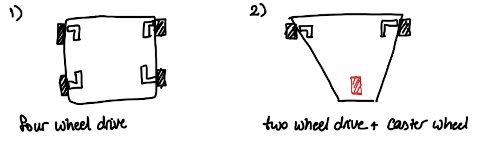
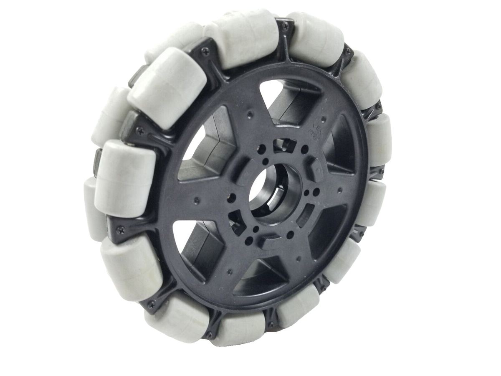
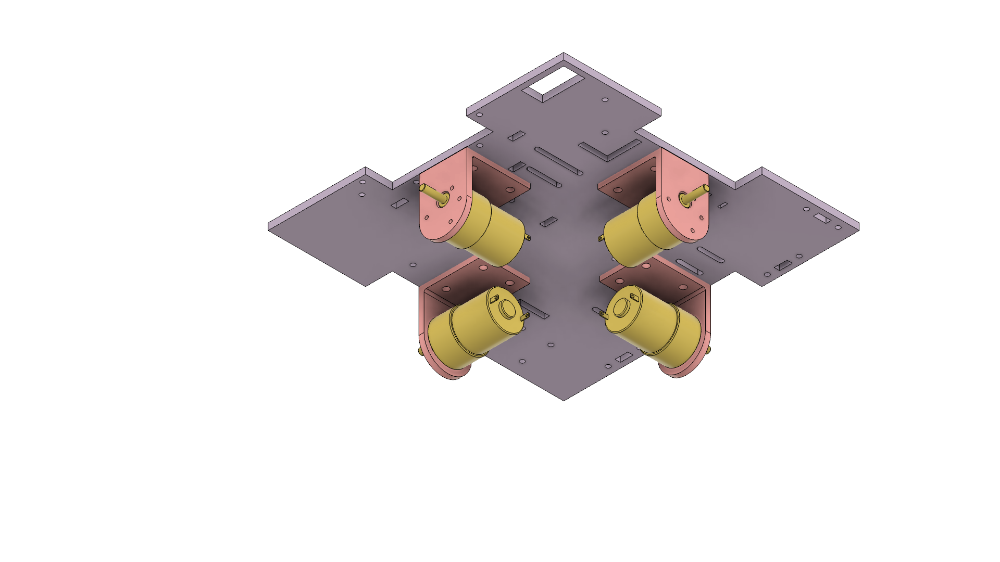
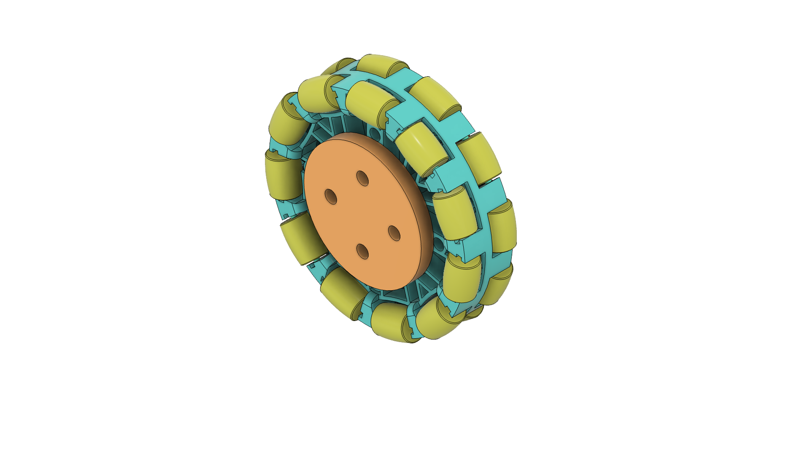
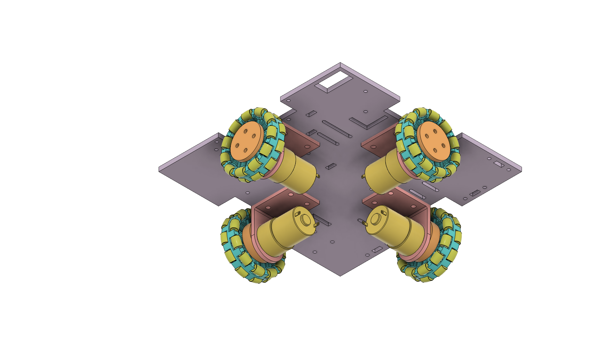
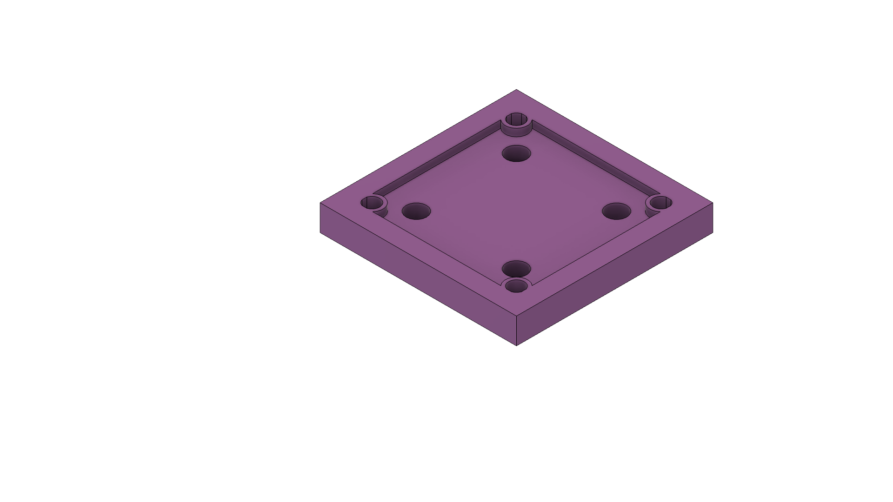
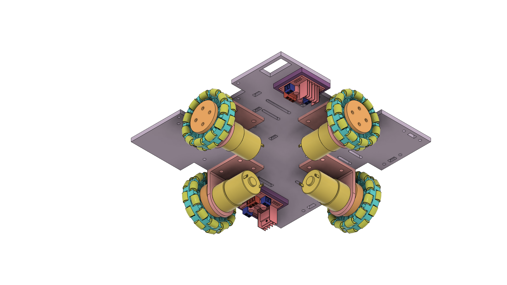
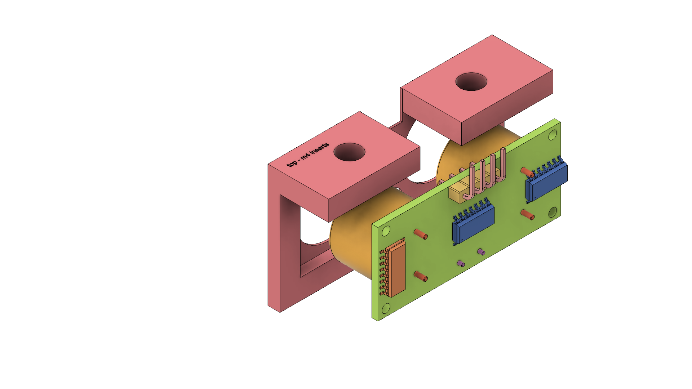
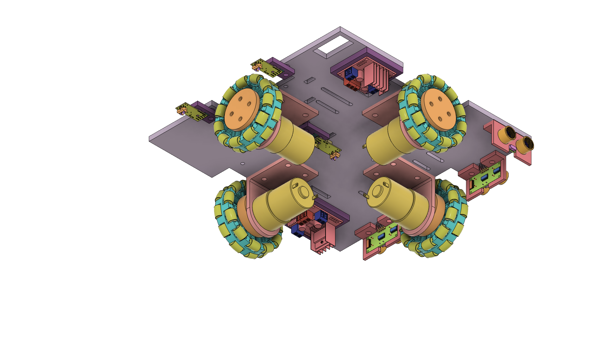
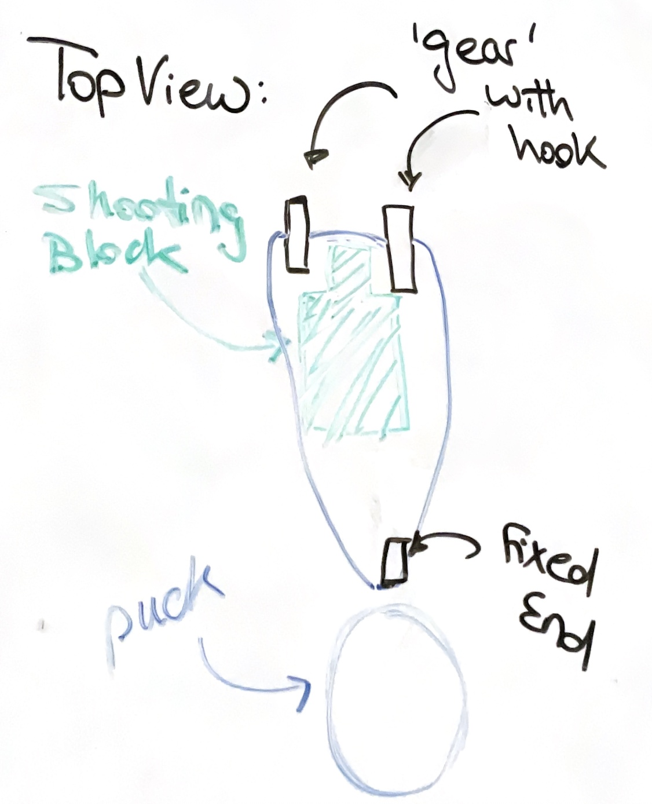

Hardware
Mechanical
The mechanical system evolved through rapid prototypes, omniwheel tradeoffs, sensor packaging, and multiple shooting mechanism pivots before settling into the final full assembly.
Navigation
Brainstorming/Design Tradeoffs:
For a drivetrain subsystem, we were considering standard wheels and omni-directional wheels. We were also considering different orientations of passive vs active drive wheels based on each wheel type.
For a standard wheel:




For an omni-directional wheel:


We were leaning towards a four-wheel drive omniwheel system because:
- We wanted to eliminate complexity when it comes to steering and turning
- Due to spatial constraints of exiting the starting box successfully and never crossing the hog lines, eliminating turn radii was the best strategy.
- A two-wheel drive with omni-directional wheels risked turning instead of translating when we would turn on one motor
- Especially since we will be carrying the weight of 3x pucks + 2x batteries, more drive torque was needed.
Prototype Build:
- We cut a 10inx10in sheet of wood
- We drilled holes into this board, zip-tied motors in, and hot-glued omni-directional wheels to the shafts.
- Within a couple days we had a fully working navigation subsystem and had a headstart on hardware overall.
- Other components added to the prototype were the sensors and they were simply taped onto the board.
Final design:
- Make mounts for motors (L-brackets)
- Make mounts for shaft-wheel interface
- Make corresponding cutouts on new chassis
- Push wheels into chassis so that robot outer dimension is bound by chassis and real estate is maximized while staying within guideline dimensions
-
Place all navigation-related components on chassis underside to free up real estate on the upper side
-
4x Motor mounts



-
4x Wheels + Shaft-Wheel Interfaces



-
2x L298N H-bridge Motor Drivers



-
4x Motor mounts
Sensing
Brainstorming/Design Tradeoffs:
We broke off the sensing subsystem into two portions:
- Orientation in starting zone
- Navigating to scoring zone
We had IR beacons at the center of the sheet, so we initially thought to include IR phototransistors.
- Can tell us which way is forward and help with orienting the robot to the right direction.
- One of our lab assignments for the class was a similar circuit and it was very complicated
- It depended on the accuracy of the IR phototransistor and behavior could be unpredictable
- As a result, and to ensure simplicity, we ended up going with a more reliable set of sensors albeit more in quantity.
- 3x Ultrasonic sensors
- 3x Line sensors
Final design:
This subsystem will be discussed in more detail in the electrical section of this report. The mechanical interface with this subsystem was the sensor mounts that enabled a secure attachment to the chassis and location/angle adjustment if needed.
- 3x Ultrasonic sensor mounts
- 3x Line sensor mounts



Storing and shooting pucks
The storing/shooting pucks subsystems took a bit more iteration from us as we kept gathering data and adapting to the components we had at the time.
Brainstorming:
During our brainstorming session, we chose a primary shooting mechanism and a backup mechanism. Our primary shooting mechanism was a flywheel system (singular or dual). Our backup mechanism was a puncher.
Prototype Build (Attempt #1): Dual flywheel system. Video link
The prototype was functional with some concerns:
- Friction between puck and surface puck sits on
- Motor has low RPM, wheels not pushing puck out far enough
Based on that we made some design changes where we:
- Switched out puck interface surface for a roller system (passive conveyor rollers) to reduce friction
- Picked a different motor with higher RPM and slightly lower torque
We tested those changes and observed the following:
- Roller system with a height-adjustable ramp was very reliable and smooth
- New motor with lower torque would sometimes stop based on the interference distance, adding another variable to our system
Based on that we made a design change so that the wheels are assisted in shooting the puck away and implemented a singular flywheel system with puck interfacing with roller:
-
Initial CAD work for motor mount and coupler for the shaft/flywheel
- Measurements were off and we could not assemble the system.
- Further testing showed that sliding the pucks down the rollers passively was sufficient to score in the 5-point region, and it proved to be a less complicated and more robust design.
-
Changed to a servo with a gate-like arm blocking pucks then releasing them at shooting location behind hog line.
-
We had two servo motor options
-
Positional servo
- Pros: Easier control
- Cons: Very weak
-
Continuous rotation servo: FS5103R [LINK: https://cdn-shop.adafruit.com/product-files/154/P154+C50-003+FS5103R+SPEC.pdf]
- Pros: Stronger
- Cons: More complicated control code
-
Positional servo
- Ended up selecting FS5103R [LINK: https://cdn-shop.adafruit.com/product-files/154/P154+C50-003+FS5103R+SPEC.pdf] after software workaround to have servo behave like a positional servo
-
CADed gate and initial servo mount
- Gate is press-fit on servo
- Initially, gate hole was hot glued to positional servo
- After we made the switch to continuous rotation servo, we removed the hot glue to clear the hole
- Printed another gate on competition day for redundancy
- Had last minute issues with new printed part, fit was too loose, suggesting earlier tolerances were too loose and leftover hot glue is what kept earlier gate part intact with servo
-
Gate was coming off the servo gear due to pucks swinging it away
- Tight mount for servo that screws motor in
- Bracket from pillar extending past gate for it to press against
-
We had two servo motor options
Final Design - Full Assembly:
Open interactive CAD viewer





Rapid prototyping
We gathered a lot of data on these subsystems from day one and that is why we were able to adapt to many changes and still deliver the system early enough.
- Within the first few days of the project, we tested out a low fidelity prototype of our flywheel shooting mechanism, and identified that the RPM/shooting distance was two short.
- We then tested with a geared motor with slightly less torque and higher RPM, and saw that it was too weak as a dual flywheel.
- We then pivoted to using a singular flywheel but testing also showed the importance of tweaking the interference distance and raised concerns about reliably implementing the system.
- In addition to the first round of parts not fitting due to inaccurate tolerances, we switched to a passive ramp mechanism. With the initial tests of this, we hot glued and taped components, and while that rendition of hardware was not reliable, it helped us ensure that the idea was viable and then we went on to make the fully nicer, well-designed parts that fit well together.